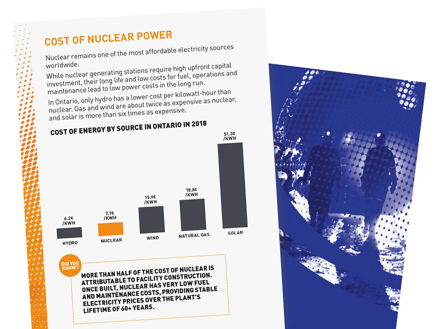
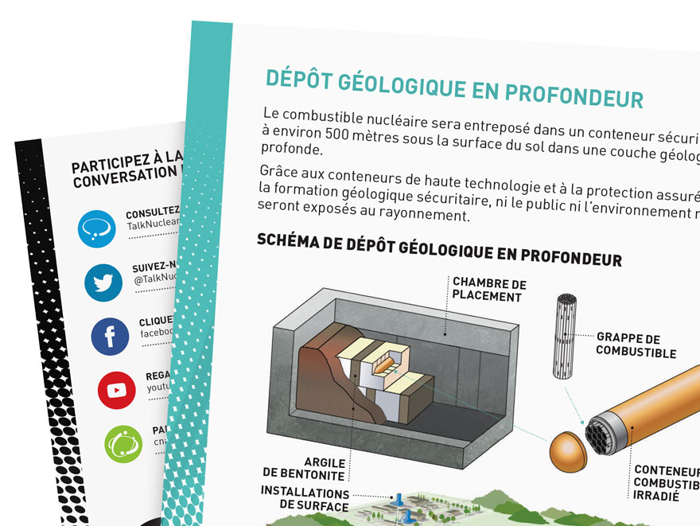

<!--Work Preview section-->
<section class="offset section">
			
	<!--Inner content-->
	<div class="innerContent">

		<!--Container-->
		<div class="container clearfix">
			<div class="fifteen columns">
				<div class="work-preview-close"></div>
			</div>
		</div>
		<!--Container-->
		
		<!--Container-->
		<div class="container clearfix">

			<div class="fifteen columns">

				<!--slider-->
				<div class="work-preview-slider clearfix flexslider" >

					<div>

						<ul class="slides">
							
							<li>
								
							</li>
							
							<li>
								
							</li>

							<li>
								
							</li>

						</ul>

					</div>
					
				</div>
				<!--slider-->

			</div>


			<div class="fifteen columns work-info">
				<h1 class="title">Canadian Nuclear Association: 2019 Factbook <br><span>Print</span></h1>
				<p>The Canadian Nuclear Factbook is a pocket-sized document with facts and figures of the nuclear industry in Canada and it's global presence. This condensed booklet of information is written in a way so industry and non-industry workers can absorb the content easily.</p>

				<p>In order to accomplish comprehensibility, visual aids such as diagrams, charts, graphs, and icons were designed in a clean and polished manner for maximum legibility. Each chapter found in the factbook was assigned a colour and included an introductory title page for increased usability and ease of navigation. Stylized bars on each page acted as an additional visual element, as well as a colour-coded table of contents when viewed from the side.</p>

				<p>The cover featured established CNA imagery; a motif of a forest and bright blue clouded sky. Further, the curves integrated into this design solution created cohesiveness with other CNA’s brand collateral. Halftone circle patterns were used to represent the concept of energy and create an appropriate, recognizable mood while injecting visual interest into this unique, identifying appearance. The separation of dots from a solid form are representative of the nuclear fission process.</p>


				<!--<div class="social-icons">
					<ul>
						<li><i class="step fi-heart"></i><span>100</span></li>
						<li><i class="step fi-social-facebook"></i><span>620</span></li>
						<li><i class="step fi-social-twitter"></i><span>450</span></li>
						<li><i class="step fi-social-pinterest"></i><span>100</span></li>
					</ul>
				</div>-->

			</div>


		</div>
		<!--Container-->
	
	</div>
	<!--Inner content-->

	
</section>